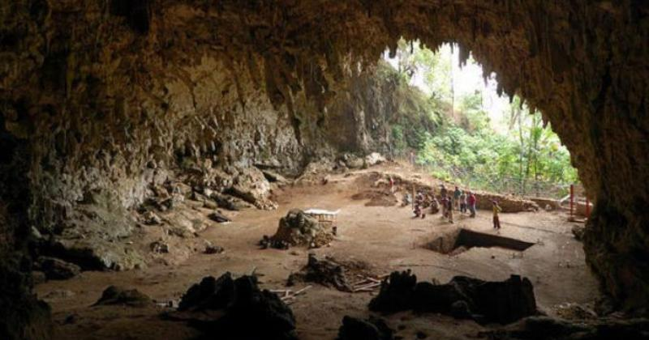

Pulau Beras Basah

Lokasi : Bontang Lestari, Kalimantan Timur
Pantai Bidak-Biduk
Lokasi : Desa Biduk-Biduk, Kecamatan Biduk-Biduk, Kabupaten Berau, Kalimantan Timur.
Goa Losan

Lokasi : Kecamatan Muara Komam, Poros jalan lintas Kalimantan Timur – Kalimantan Selatan
Danau Jempang

Lokasi :
Kec. Jempang, Kabupaten Kutai Barat, Kalimantan Timur
Hutan Mangrove Margomulyo

Lokasi :
Margo Mulyo, Kec. Balikpapan Bar., Kota Balikpapan, Kalimantan Timur
Gua Haji Mangku

Lokasi :
Kepulauan Derawan Berau Kalimantan Timur